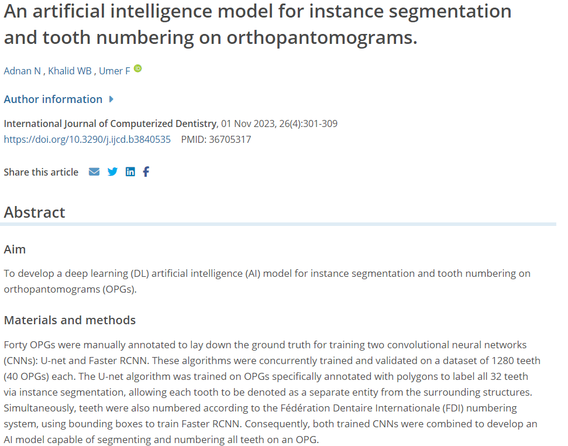
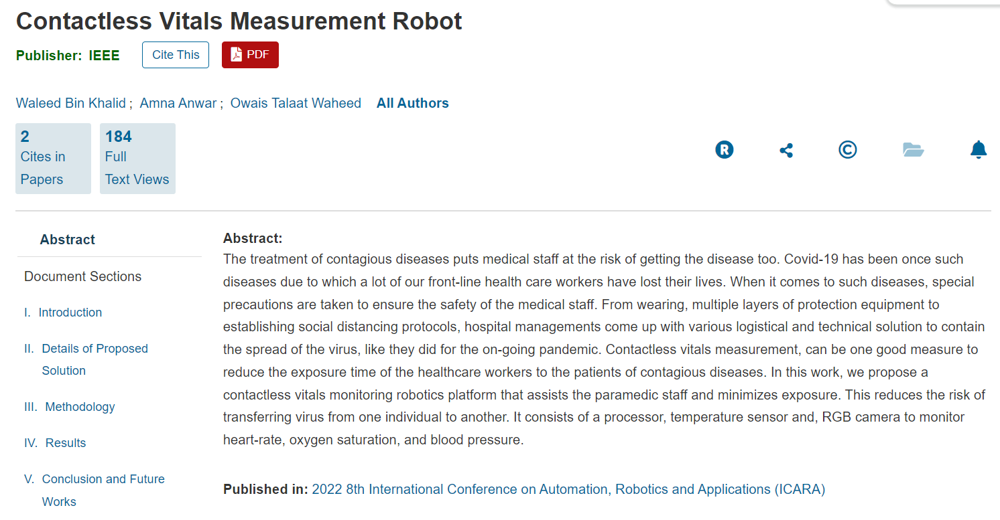

Research & Publications
Georgia Institute of Technology | Research Project
Worked on this legged robot navigation project with Dr. Sehoon Ha at Georgia Tech. Developed and vectorized the robot environment in the RaiSim simulator using C++ and Python bindings. Achieved over 95% success rate for the baseline point-to-goal navigation policy on a flat plane using PPO. Created different terrains for uncertain terrains traversal, with future plans for training an imitation learning policy.
|
View Full Project Report |
Watch Video 01 |
Watch Video 02 |
Niha Adnan, Waleed Bin Khalid, Fahad Umer | International Journal of Computerized Dentistry 2023
Developed a deep-learning pipeline for teeth segmentation using U-NET and FRCNN. The Orthopantomograms dataset was self-annotated & processed for the project using PIL, numpy, JSON & OpenCV.

Visualization of Instance Segmentation and Tooth Numbering |

View Full Publication |
Waleed Bin Khalid, Amna Anwar, Owais Talaat Waheed | International Conference on Automation, Robotics, and Applications 2022
Researched the use of Image processing for photoplethysmography to develop a non-contact vitals measurement robot. Presented the work at ICARA 2022 and received the Best Capstone Project award.
|
View Full Thesis |

View IEEE Publication |